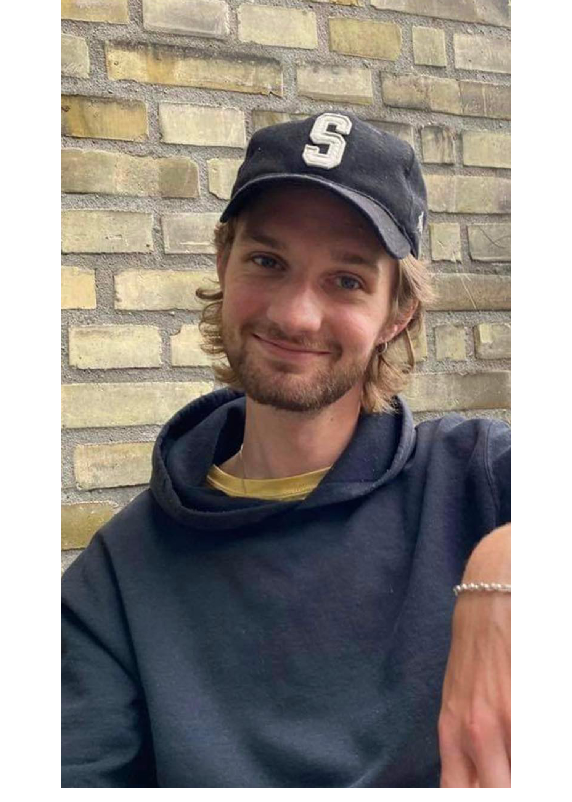

ADAM GREVE FABRICIUS
Erfaring
SuperBrugsen, Humlebæk– servicemedarbejder
2014 - 2016
Jeg arbejdede på deltid som servicemedarbejder 2-4 gange om ugen efter skole eller i weekenden. Her har jeg erhvervet mig erfaring med mennesker, service og ansvar. Jeg blev opsagt så snart jeg fyldte 18 år, da de ikke ville ansætte folk derefter.
Louisiana Museum of Modern Art, Humlebæk – tjener
2016 - Igangværende
Jeg har arbejdet som cafémedarbejder/tjener siden starten af mit sabbatår, og gør det stadig. Det startede som deltid, men blev hurtigt fastansat, og var fastansat fra juni 2016 til august 2020. Jeg gik dog tilbage til deltid grundet studiestart. Her har jeg yderligere erhvervet mig erfaring med mennesker og opfyldning af kunders behov, samt service og større ansvarlighed. Dertil lært at fungere og samarbejde i et stort medarbejderteam.
Uddanelse
Helsingør Gymnasium, Helsingør - STX
2013 - 2016
Studentereksamen, 2016
Roskilde Universitet (RUC), Roskilde - Humanistisk Bachelor
2020 - 2021
Første semester
NEXT KBH, København - Bygningssnedker
2021 - 2021
Københavns Erhvervsakademi (KEA), København - Multimediedesign
2021 - Igangværende
